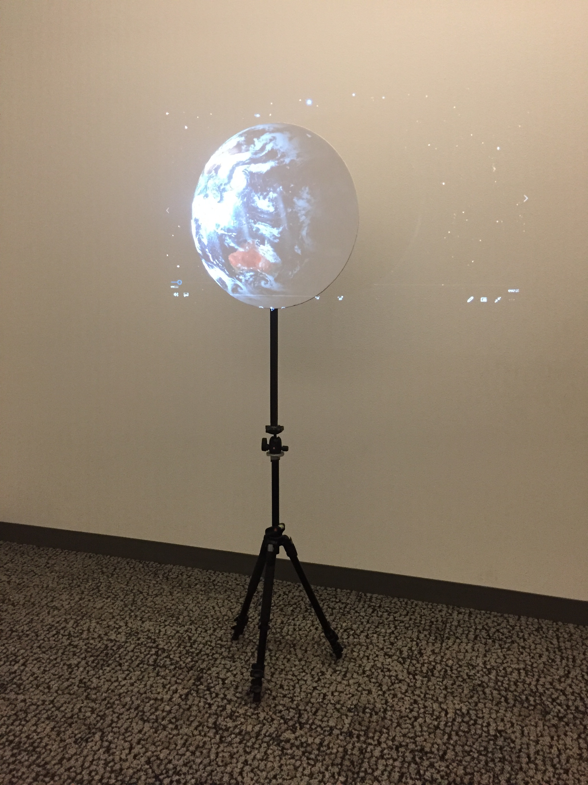

Projected Planets Continued

The setup looked like the pictures above, the first one showing how it all worked together when projected on. The second image shows the room setup I had to do to film video of the exhibit in action, as pictures can't do it justice.
When projected on the circle the spinning planets have a 3D effect and look as if they're a spinning globe, even though you can see it's on a flat surface. It gives it a really interesting optical illusion effect as you can see in the videos below.
Front View:
Side View:
Center View:
Moving View:
And finally here's the video I edited that's shown projecting in the videos above, which gives a better idea of how high quality the projection looked in person.